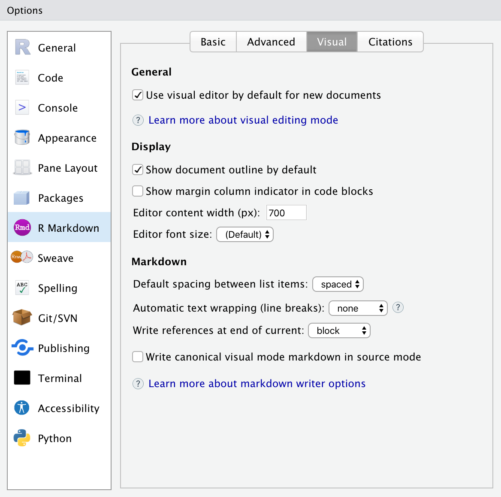
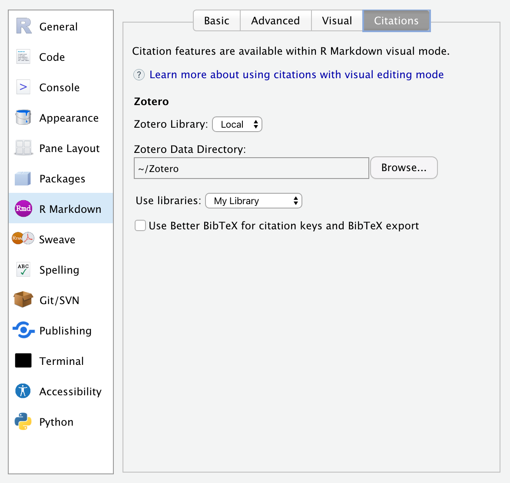
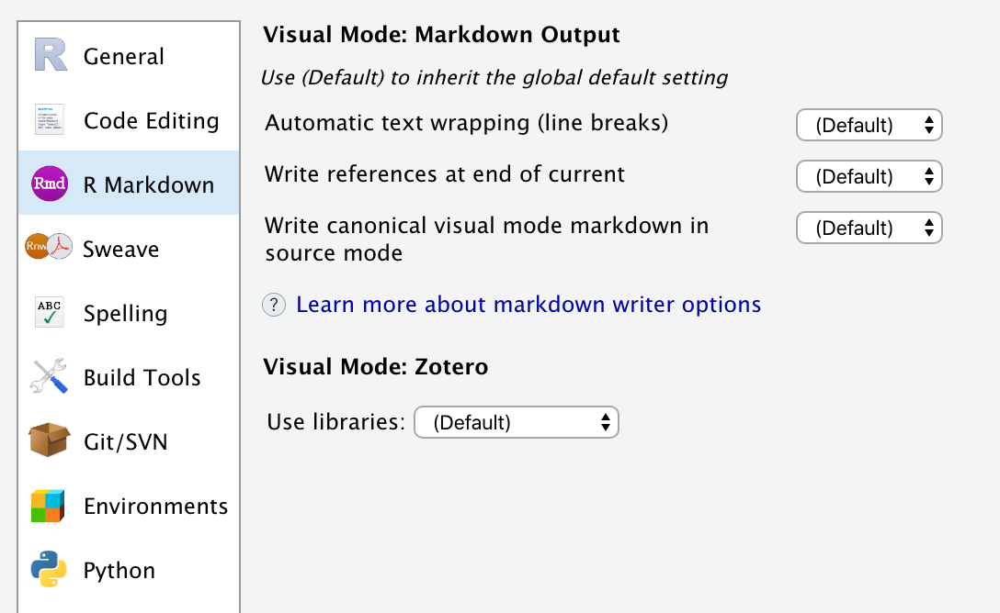

Shortcuts & Options
Shortcuts
Visual mode supports both traditional keyboard shortcuts (e.g. ⌘ B for bold) as well as markdown shortcuts (using markdown syntax directly). For example, enclose **bold** text in asterisks or type ## and press space to create a second level heading.
Here are the available keyboard and markdown shortcuts:
| Command | Keyboard Shortcut | Markdown Shortcut |
|---|---|---|
| Bold | ⌘ B | **bold** |
| Italic | ⌘ I | *italic* |
| Code | ⌘ D | `code` |
| Strikeout | ~~strike~~ |
|
| Subscript | ~sub~ |
|
| Superscript | ^super^ |
|
| Heading 1 | ⌥⌘ 1 | # |
| Heading 2 | ⌥⌘ 2 | ## |
| Heading 3 | ⌥⌘ 3 | ### |
| Heading Attributes | {#id .class} |
|
| Blockquote | > |
|
| Code Block | ⇧⌘ \ | ``` |
| R Code Chunk | ⌥⌘ I | ```{r} |
| Raw Block | ```{=html} |
|
| Div | ::: |
|
| Bullet List | - |
|
| Ordered List | 1. |
|
| Tight List | ⌥⌘ 9 | |
| List Check | [x] |
|
| Link | ⌘ K | <href> |
| Emoji | :smile: |
|
| Definition | : |
|
| Non-Breaking Space | ⌃ Space | |
| Hard Line Break | ⇧ Enter | |
| Paragraph | ⌥⌘ 0 | |
| Image | ⇧⌘ I | |
| Footnote | ⇧⌘ F7 | |
| Citation | ⇧⌘ F8 | [@ |
| Table | ⌥⌘ T | |
| Editing Comment | ⇧⌘ C | |
| Select All | ⌘ A | |
| Clear Formatting | ⌘ \ | |
| Edit Attributes | F4 | |
| Run Code Chunk | ⇧⌘ Enter | |
| Run Previous Chunks | ⇧⌥⌘ P |
For markdown shortcuts, if you didn’t intend to use a shortcut and want to reverse its effect, just press the backspace key.
Insert Anything
You can also use the catch-all ⌘ / shortcut to insert just about anything. Just execute the shortcut then type what you want to insert. For example:


If you are at the beginning of a line (as displayed above) you can also enter plain / to invoke the shortcut.
Global Options
You can customize visual editing options within R Markdown -> Visual (note that the visual editor was originally created for use with R Markdown so its options are located there — these options are also applicable to usage with Quarto):

| Option | Description |
|---|---|
| Use visual editing by default | Switch to visual mode immediately when creating new documents. |
| Show document outline by default | Show the navigational outline when opening documents in visual mode. |
| Editor content width | Maximum width for editing content. This is intended to keep editing similar to the width that users will see. |
| Editor font size | Base font size for editor content (default: inherit from IDE settings). |
| Show margin column indicator in code blocks | Show vertical line that indicates location of editing margin column (e.g. 80). |
| Default spacing between list items | Whether to use tight or normal spacing between list items by default. See Tight Lists for details. |
| Automatic text wrapping (line breaks) | When writing markdown, automatically insert line breaks after sentences or at a specified column (default: flow text; no auto-wrapping). See Line Wrapping for details. |
| Write references at end of current | Write references (footnotes) at the end of the block or section where they appear, or at the end of the document. See References for details. |
| Write canonical visual mode markdown in source mode | Use the visual mode markdown writer when saving markdown from source mode (ensure consistency between documents saved from either mode). |
Citation Options
You can customize visual editor citation options within R Markdown -> Citations:

| Option | Description |
|---|---|
| Zotero Library | Location of Zotero citation library (Local or Web). |
| Zotero Data Directory | Location of Zotero local data directory. |
| Use libraries | Zotero libraries to use as reference sources. |
| Use Better BibTeX for citation keys and BibTeX export. | Optionally use Better BibTeX to generate citation keys and export BibTeX from Zotero (this option appears only if Better BibTeX is installed). |
Project Options
Global options that affect the way markdown is written can also be customized on a per-project basis. You can do this using the R Markdown pane of the Project Options dialog:

By default projects inherit the current global settings for markdown writing and Zotero libraries.
File Options
Global and project options that affect the way markdown is written can also be customized on a per-file basis . You can do this by including an editor_options: markdown key in the YAML front matter of your document. For example:
---
title: "My Document"
author: "Jane Doe"
editor_options:
markdown:
wrap: 72
---You might want to do this to ensure that multiple authors on different workstations use the same markdown writing options.
You can also instruct RStudio to use these same options when saving files from source mode. To do this add the canonical option. For example:
---
editor_options:
markdown:
wrap: 72
canonical: true
---With canonical: true, edits in visual mode and source mode will result in identical markdown output. This is especially useful if you have multiple authors collaborating using version control, with a mixture of source and visual mode editing among the authors.
See the documentation on Writer Options for additional details on markdown writing options.